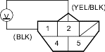
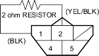

Special Tools Required
Adjustable ring wrench 07WAA-0010100
NOTE: For the fuel gauge system circuit diagram, refer to the Gauges Circuit Diagram (see page 22-88).
- Check the No. 10 METER (75A) fuse in the under-dash fuse/relay box before testing.
- Turn the ignition switch OFF.
- Remove the rear seat cushion (see page 20-95).
- Remove the access panel from the floor.
- Disconnect the fuel pump 5P connector.
- Measure voltage between the fuel pump 5P connector terminals No. 1 and No. 2 with the ignition switch ON (II). There should be between 5 and 8 V.
- If the voltage is as specified, go to step 7.
- If the voltage is not as specified, check for:
- an open in the YEL/BLK or BLK wire.
- poor ground (G551).

- Turn the ignition switch OFF.
- Install a 2 ohm; resistor between the fuel pump 5P connector terminals No. 1 and No. 2, then turn the ignition switch ON (II).

- Check that the pointer of the fuel gauge indicates ''F''.
- If the pointer of the fuel gauge does not indicate ''F'', replace the gauge.
- If the gauge is OK, inspect the fuel gauge sending unit.
NOTE: The pointer of the fuel gauge returns to the bottom on the gauge dial when the ignition switch is OFF regardless of the fuel level.